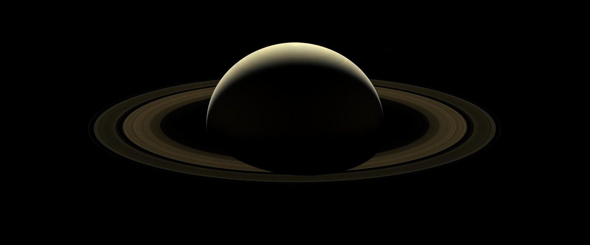
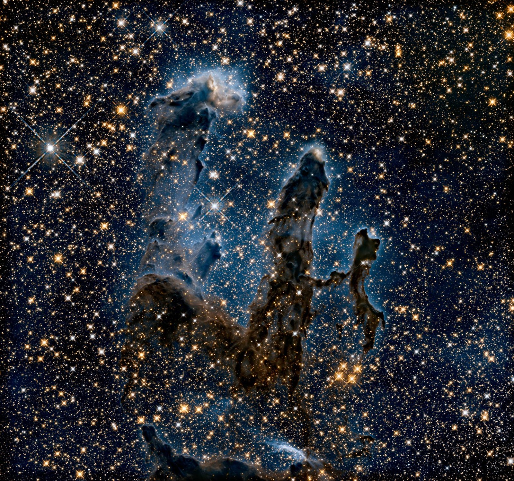
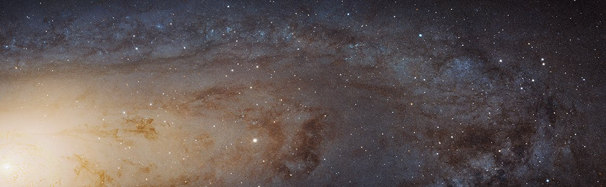
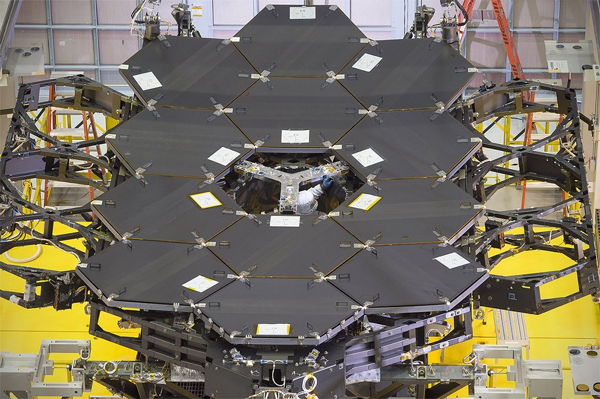
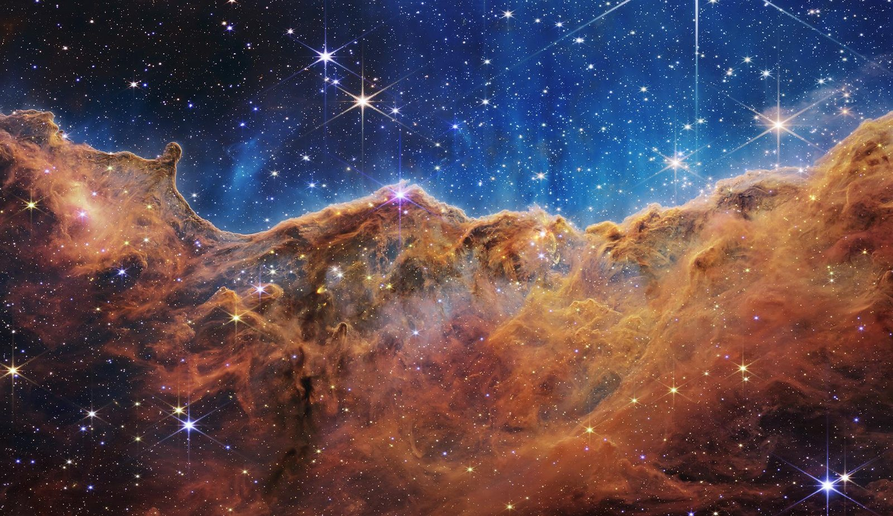

Universe Explorer · Ένας οδηγός στο άπειρο
Εξερεύνησε το Άπειρο
Ένα ταξίδι στα βάθη του σύμπαντος ξεκινά εδώ. Ανακάλυψε πλανήτες, άστρα, γαλαξίες και μυστήρια που ξεπερνούν τη φαντασία.
Ο χάρτης του ταξιδιού
Οκτώ σταθμοί στο άπειρο
Από τον Ήλιο και τους γείτονές μας μέχρι τις μαύρες τρύπες και τα όρια της γνώσης. Διάλεξε από πού θα ξεκινήσεις.

01Το Ηλιακό μας Σύστημα
Ο Ήλιος, οκτώ πλανήτες, νάνοι πλανήτες, δεκάδες δορυφόροι και δισεκατομμύρια μικρά σώματα — το σπίτι μας στο διάστημα.
Εξερεύνησε
02Άστρα & Αστρική Εξέλιξη
Από τα μοριακά νέφη στους ερυθρούς γίγαντες και τους λευκούς νάνους: πώς γεννιέται, ζει και πεθαίνει ένα άστρο.
Εξερεύνησε
03Γαλαξίες
Σπειροειδείς, ελλειπτικοί και ακανόνιστοι νησιά άστρων. Ο δικός μας Γαλαξίας και οι γείτονές του στο Τοπικό Σμήνος.
Εξερεύνησε 04
04Μαύρες Τρύπες
Περιοχές όπου η βαρύτητα νικά ακόμη και το φως. Ορίζοντας γεγονότων, υπερμεγέθεις γίγαντες και τα όρια της γνώσης μας.
Εξερεύνησε
05Εξερεύνηση του Διαστήματος
Από το Sputnik και το Apollo 11 στο Voyager, το James Webb και τους σταθμούς του μέλλοντος.
Εξερεύνησε 06
06Ζωή πέρα από τη Γη
Χιλιάδες εξωπλανήτες, κατοικήσιμες ζώνες και η μεγάλη ερώτηση: είμαστε μόνοι;
Εξερεύνησε 07
07Τα Μεγάλα Μυστήρια
Σκοτεινή ύλη, σκοτεινή ενέργεια, η διαστολή του σύμπαντος και τι υπήρχε πριν από τη Μεγάλη Έκρηξη.
Εξερεύνησε
08Κουίζ Γνώσεων
Δέκα τυχαίες ερωτήσεις από όλες τις ενότητες, με εξηγήσεις και βαθμολογία. Πόσο καλά γνωρίζεις το σύμπαν;
Εξερεύνησε13,8 δισεκατομμύρια χρόνια
Η ιστορία του σύμπαντος σε έξι στιγμές
Πάτησε έναν σταθμό της χρονογραμμής. Κάθε σημείο κρύβει μια διαφορετική εποχή — και μια διαφορετική βεβαιότητα.
Η αρχή του χρόνου
Το σύμπαν ήταν εξαιρετικά καυτό και πυκνό. Από εκείνη τη στιγμή ξεκινούν ο χώρος, ο χρόνος και η διαστολή που συνεχίζεται μέχρι σήμερα. Τα πρώτα δευτερόλεπτα παρήγαγαν τα ελαφρά στοιχεία: υδρογόνο, ήλιο και ίχνη λιθίου.

Είμαστε ένα αστέρι ανάμεσα σε δισεκατομμύρια
Ο Ήλιος βρίσκεται σε έναν από τους βραχίονες του Γαλαξία, περίπου 26.000 έτη φωτός από το κέντρο του. Ταξιδεύει γύρω του με 220 χλμ./δευτ. και χρειάζεται 230 εκατομμύρια χρόνια για έναν κύκλο.
Μια ημέρα στην Αφροδίτη διαρκεί περισσότερο από το έτος της: 243 γήινες ημέρες περιστροφής έναντι 225 ημερών τροχιάς.
Έτοιμος;
Πόσο καλά γνωρίζεις το σύμπαν;
Δέκα ερωτήσεις, εξηγήσεις για κάθε απάντηση και μια βαθμολογία στο τέλος. Χωρίς χρόνο, χωρίς πίεση.